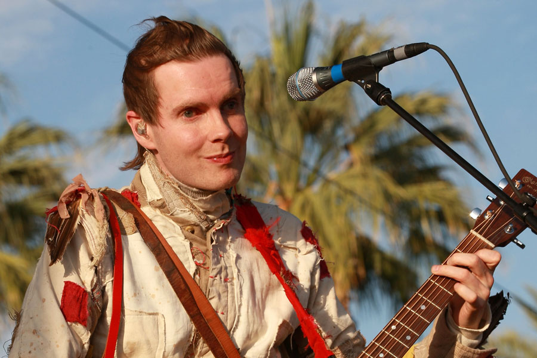
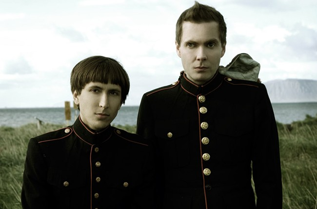

Jónsi, the lead singer of Sigur Ros
Jón Þór "Jónsi" Birgisson (born 23 April 1975) is an Icelandic musician;
he is the vocalist and multi-instrumentalist for the Icelandic post-rock band
Sigur Rós. He is known for his use of a cello bow on guitar and his
"angelic" falsetto or countertenor voice. He is blind in his right eye from birth
as a result of a broken optic nerve from the brain. He is openly gay.
Apart from Sigur Rós, Jónsi also performs together with his ex-partner
Alex Somers as an art collaboration called Jónsi & Alex. They released their
self-titled first book in November 2006, which was an embossed hardcover
limited to 1,000 copies. The two also released the album Riceboy Sleeps,
in July 2009. They announced their separation in 2019, after
having been together for 16 years.

